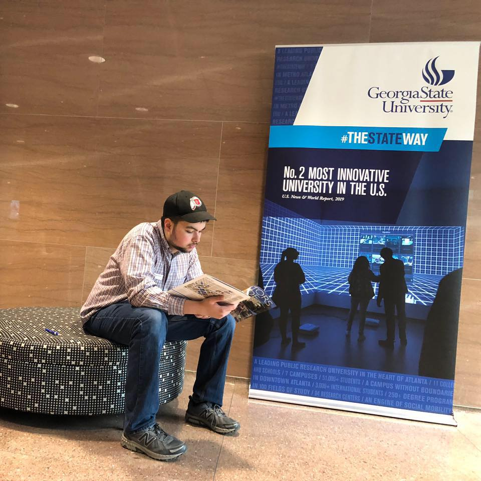
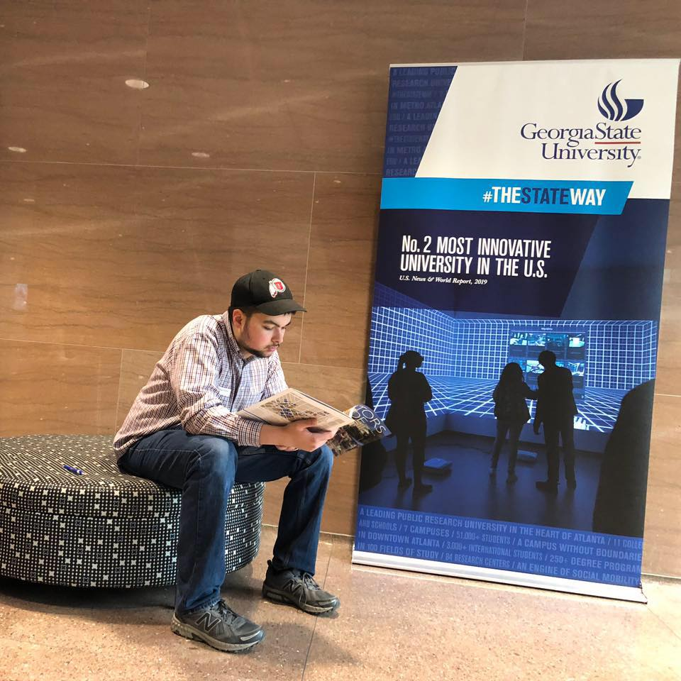

Elliott Day - About Me
Ever since I was very young, programming was something I was interested in. However, I did not have the resources or means to do so at the time. Now, many years later, I finally get to realize that dream. I am truly passionate about software development, and I am very appreciative of the fact that I am able to partake in such an amazing field. In the future, I want to have an arsenal of skills (such as expertise in Javascript, CSS, HTML, React, and more) so that I can exceed a client's expectations, as well as my own. I most surely want to learn programming languages towards the bottom of the stack (i.e., C, C++, Java, PHP, Pascal) so that I can better separate myself from the crowd in the ever-increasing number of professionals in the field. I am considering minoring in computer science when I return back to the University of Utah.
My major at the University of Utah is accountancy; however, I am taking a temporary leave of absence from attending the school due to personal reasons. I do plan to return and acquire my degree there in accountancy beginning in Fall 2021. Before becoming a sophomore here at the university, I completed a year of college at Georgia State University. My interests and hobbies include music (particularly piano, organ, and choir), finance, accountancy, earth science, real estate, history, and politics. I love to travel and one day hope to visit Dubai, UAE.
I was born and partly raised in New York City, NY before moving down to Georgia at the age of 5. I lived in two different places in Georgia for roughly 15 total years and then moved to Salt Lake City, UT for 4 months before moving again to Draper, UT, which is where I live now. I have lived in Utah for 7 total months.
 

If you wish to contact me or take a look at my professional platforms, please do so through the links displayed at the bottom of the page in the gray footer.